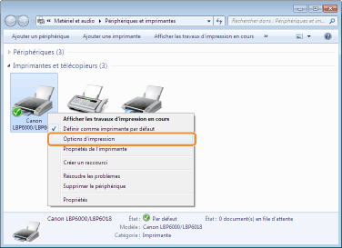
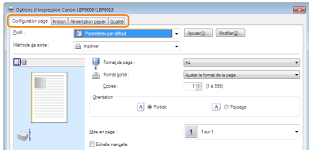

Modification des valeurs par défaut des options d'impression
1
Ouvrez le dossier des imprimantes.
2
Cliquez avec le bouton droit sur l'icône de votre imprimante, puis sélectionnez [Options d'impression] dans le menu contextuel.

3
Modifiez les options d'impression dans les onglets [Configuration page], [Finition], [Alimentation papier] et [Qualité].
Les paramètres modifiés à cet endroit deviennent les valeurs par défaut.
Pour en savoir plus sur les paramètres, reportez-vous à l'aide.

4
Confirmez vos choix, puis cliquez sur [OK].
|
→
|
Le dossier des imprimantes réapparaît.
|